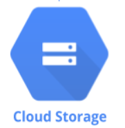
Google Cloud Platform's Cloud Storage (GCS) is a "storage-as-a-service" solution that manages a project's data without requiring management of disks and servers. The service can be set up to automatically replicate and distribute data across multiple data centers in multiple regions. The storage abstraction is an object-based one, similar to the web. In addition, objects are commonly accessed via URIs with the gs:// prefix. In this set of codelabs, we will practice setting up and interacting with GCS.
In this lab, you will create a VM that will download up-to-date information about earthquakes that the USGS provides, create an image showing the data via a Python script, and then distribute the image via a storage bucket. As a result, the VM needs to be configured to create storage buckets as well as read and write objects to/from them.
Permissions via service accounts
Visit Compute Engine in the web console and begin the creation of a new Ubuntu 20.04 VM in us-west1-b. Scroll down to the "Identity and API access" section. As the UI shows, unless otherwise specified, Compute Engine instances are assigned a "Compute Engine default service account" that controls its access to the platform.

In another window, bring up your project's IAM settings and find the service account.
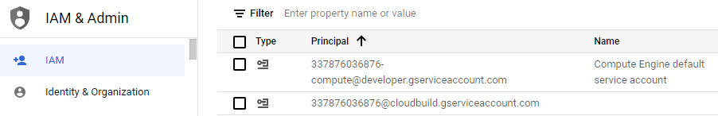
Answer the following questions for your lab notebook.
- What role is attached to the Compute Engine default service account?
- Would it be sufficient for the VM to perform its functions (i.e. creating buckets and reading/writing objects in them)?
It is good practice to restrict the privileges of your VM in case it is ever compromised. The recommended way would be to create a custom service account that contains only the roles that the VM needs.
Permissions via access scopes
Go back to your Compute Engine configuration. Another way to restrict the VM's access is to use the "Access scopes" mechanism shown in the UI. Access scopes allow one to specify which Google Cloud APIs the VM has permissions to use. Hover over the question mark next to "Access scopes".
Answer the following questions for your lab notebook.
- What permissions are given by the default access scope to Cloud Storage?
- Would they be sufficient for the VM to perform its functions (i.e. creating buckets and reading/writing objects in them)?
Using the UI, attempt to configure the access scope for each API. Scroll down to find the Storage API as shown below:
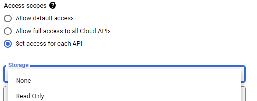
- What settings are possible for setting the VM's access to the Storage API?
As shown in the previous step, we can pick one of two ways to configure a least-privileges setting for the permissions for our VM. The first would be to create a service account and assign a custom role to it with storage bucket permissions. The second would be to set the VM's access scopes to allow full access to the storage service.
In this lab, we'll keep the Compute Engine default service account for the VM, but customize the access scope to enable Storage API access. While you can do this via the web console, within Cloud Shell, the VM can be instantiated with the following gcloud CLI command. Name the VM usgs.
gcloud compute instances create usgs \
--machine-type e2-medium --zone us-west1-b \
--image-project ubuntu-os-cloud --image-family ubuntu-2004-lts \
--scopes storage-fullCreate the VM and wait for it to come up. Then, from the Compute Engine console, click on "ssh" to bring up a session on it. You may also connect to the instance via ssh within Cloud Shell via:
gcloud compute ssh usgsOn your ssh session on the Compute Engine VM, clone the repository containing the code for the lab and change directories into it.
git clone https://github.com/GoogleCloudPlatform/training-data-analyst
cd training-data-analyst/CPB100/lab2bDownload the latest earthquake data as a CSV file. Examine the first two rows of the file.
wget https://earthquake.usgs.gov/earthquakes/feed/v1.0/summary/all_week.csv \ -O earthquakes.csv head -2 earthquakes.csv
Answer the following questions for your lab notebook.
- What
timedid the latest earthquake happen? - What was the magnitude (
mag)? - Where was the
placeit happened?
Install the required Python3 packages for the lab including matplotlib, numpy, and requests:
sudo apt-get update -y
sudo apt-get install -y python3-mpltoolkits.basemap python3-numpy \
python3-matplotlib python3-requestsThe Python script transform.py will ingest the earthquake data in the CSV file we have downloaded and create a visual representation of the earthquakes and their magnitudes on a world map. Run the code to generate the image:
python3 transform.pyThe file earthquakes.png should have been created. Unfortunately, we need a way to access it. While we could try to copy it over ssh, we will instead use Cloud Storage. Most command-line functionality on Google Cloud is done via the gcloud command with the exception of Cloud Storage and Big Query which have their own commands in the SDK (gsutil and bq). To begin with, make a new bucket with gsutil mb using a unique bucket name.
gsutil mb gs://<UNIQUE_BUCKET_NAME>
Then use gsutil cp to copy all of the earthquake files, including the image, to the bucket:
gsutil cp earthquakes.* gs://<UNIQUE_BUCKET_NAME>
In the web console, bring up Cloud Storage, navigate to the bucket you have created, and click on the earthquake.png file.
- Take a screenshot of the image that has been created for your lab notebook.
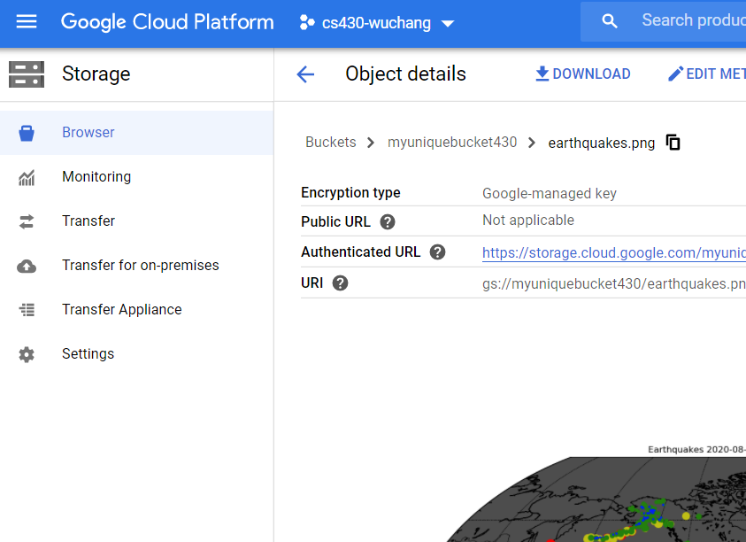
The previous lab used the Compute Engine default service account and set its access scopes to restrict the VM to full access only to Cloud Storage. The access scope method is a legacy mechanism and it is undesirable to have multiple, disparate ways to perform access control as it increases complexity. Instead, best practices for implementing least-privileges on Google Cloud is to set the access scope to allow the entire platform, but to create service accounts with the minimal roles and permissions attached to them. This lab will demonstrate how this is done using the bucket previously created.
Begin by creating a service account.
Option #1: Web console
Go to IAM and visit "Service accounts" or go directly to https://console.cloud.google.com/iam-admin/serviceaccounts
Create a new service account called gcs-lab and continue to grant the account access to your project. Add a role to the service account that only allows it to read objects in your buckets (Storage Object Viewer)
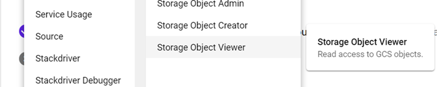
Skip the process for assigning per-user access to the service account as we will be assigning this account to a subsequent Compute Engine VM. You should see the service account in the UI after its creation:
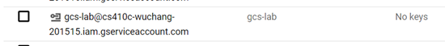
Option #2: Cloud Shell
Advanced practitioners may find the command-line interface more convenient for performing the same operation. To do so, launch Cloud Shell and create the service account using the gcloud command.
gcloud iam service-accounts create gcs-labWe must now add the storage role to the service account so that it can view objects in storage buckets on our project. To do so, we add a policy specifying this. Note that the command below assumes that your Cloud Shell session is bound to your current Google Cloud Project identifier.
gcloud projects add-iam-policy-binding ${GOOGLE_CLOUD_PROJECT} \
--member serviceAccount:gcs-lab@${GOOGLE_CLOUD_PROJECT}.iam.gserviceaccount.com \
--role roles/storage.objectViewerVisit Compute Engine in the web console and begin the creation of a new Ubuntu 20.04 VM named gcs-lab-vm in us-west1-b. Scroll down to the "Identity and API access" section. Instead of using the Compute Engine default service account, see that you can select the service account you have just created.
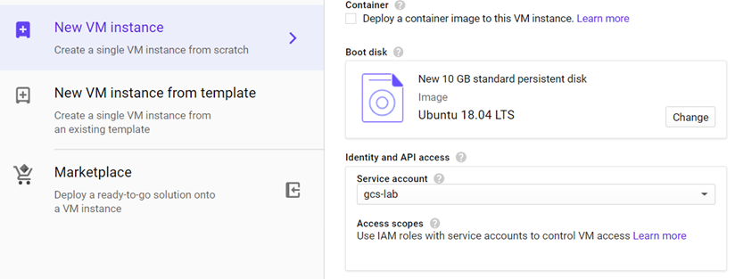
When attaching this service account to the VM, all accesses to resources will be done according to the roles that have been associated with it (i.e. Storage Object Viewer).
While you can continue to create the VM in the UI, as before, you can also create one via the gcloud CLI as shown below, specifying the service account in its arguments:
gcloud compute instances create gcs-lab-vm \
--machine-type e2-medium --zone us-west1-b \
--image-project ubuntu-os-cloud --image-family ubuntu-2004-lts \
--scopes cloud-platform \
--service-account gcs-lab@${GOOGLE_CLOUD_PROJECT}.iam.gserviceaccount.comssh into the VM via the web console or within Cloud Shell via
gcloud compute ssh gcs-lab-vm
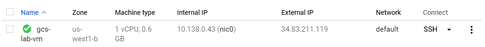
Attempt the following command on the VM:
gcloud compute instances list
Answer the following question for your lab notebook:
- What is the exact error message that is returned?
We will now add permissions that will allow us to list Computer Engine instances. Go back to the IAM settings, find the service account, and click the pencil icon on the far right to edit the account.
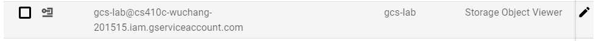
Then, click on "ADD ANOTHER ROLE", then in the filter box, type "list compute instances".
- What role needs to be added to the service account's permissions for the VM to have access to list the project's Compute Engine instances?
Add the role and save the changes. Go back to the VM and repeat the command until it succeeds.
- Take a screenshot of the output for your notebook.
In the same ssh session, use the gsutil command to copy the earthquake image file in the previous lab from the storage bucket onto the VM.
gsutil cp gs://<UNIQUE_BUCKET_NAME>/earthquakes.png .
The command should succeed since the Storage Object Viewer role has been attached to the service account assigned to the VM.
Rename the file to a different name and then attempt to copy it back into the bucket.
cp earthquakes.png moonquakes.png gsutil cp moonquakes.png gs://<UNIQUE_BUCKET_NAME>/
Answer the following question:
- What is the exact error message that is returned?
Go back to the service account in IAM and click the pencil icon on the far right to edit the account as done previously
Then, click on "ADD ANOTHER ROLE", then in the filter box, type "storage object create".
- What role needs to be added to the service account's permissions for the VM to have access to add an object to a storage bucket?
Add the role and save the changes. Go back to the VM and repeat the gsutil command until it succeeds.
- Take a screenshot of the output for your notebook.
In many instances, applications will need to interact with Google Cloud Storage programmatically. The Google Cloud SDK provides language support across a plethora of common programming languages that can be used to interact with storage buckets. For this lab, we will show how Python can be used to do so.
First, bring up a Cloud Shell session and download an image of your choice by filling in a number (00 to 19) and storing it in image.jpg.
// Fill in <NUM> with 00, 01, ..., 19 wget -O image.jpg http://chi-ni.com/motd/<NUM>.jpg
Then, set up a Python environment and install the Google Cloud SDK's storage package.
python3 -m venv env source env/bin/activate pip3 install google-cloud-storage
Then launch a Python 3 interpreter
python3
First, import the storage module from the package:
from google.cloud import storageInstantiate a client from it.
storage_client = storage.Client()Get a handle to your storage bucket, omitting the gs:// prefix.
bucket = storage_client.get_bucket('<UNIQUE_BUCKET_NAME>')Create a blob that represents specific objects stored in buckets. The constructor for blob takes the name you want to create in the bucket for storing the blob (gcs-lab-image.jpg).
blob = bucket.blob('gcs-lab-image.jpg')Open the image downloaded previously for reading in raw binary mode:
myImage = open('image.jpg', mode='rb')Upload the contents of the image, specifying its content type:
blob.upload_from_string(myImage.read(), content_type='image/jpeg')Make the object in the bucket publicly accessible via URL:
blob.make_public()Then, get the URL for the object.
blob.public_urlKeep the Python interpreter running.
Visit the URL via a web browser.
- Take a screenshot the shows the entire URL and the image that has been retrieved:
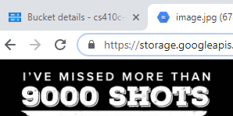
Back in the Python interpreter in Cloud Shell, delete the object from the bucket:
blob.delete()Visit the web console and delete the storage bucket, the VMs, and the IAM service accounts created. Alternatively, you can perform the clean-up via Cloud Shell using the sequence below.
Delete the contents of the storage bucket and the bucket itself via gsutil:
gsutil rm gs://<UNIQUE_BUCKET_NAME>/*
gsutil rb gs://<UNIQUE_BUCKET_NAME>Delete the Compute Engine VMs
gcloud compute instances delete usgs gcs-lab --zone=us-west1-bDelete the gcs-lab service account
gcloud iam service-accounts delete gcs-lab@${GOOGLE_CLOUD_PROJECT}.iam.gserviceaccount.comIt is important to deploy any cloud infrastructure with the minimal amount of privileges necessary to run. The principle of least privileges requires practice to apply appropriately. In this lab, you will learn how to reduce the permissions of service accounts with over-provisioned permissions.
Follow the directions at:
https://thunder-ctf.cloud/leastprivilege/
Play all levels and visit the check function or scoreboard when complete.
- Take a screenshot of every congratulatory message along with the corresponding level name in the check function. Alternatively, you can take a screenshot of the scoreboard that includes your project name in it.
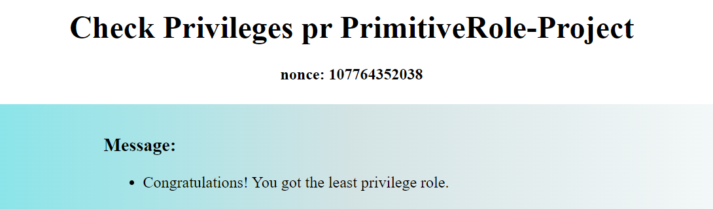